Openingsuren laden · Waversebaan 47, Heverlee
Kleur en vorm,
één verhaal.
Kapsalon in Heverlee voor gelaagde snitten, pony's, bronde en meches met een toner op maat. Twijfel je over de richting? Dan zoeken we samen de look die bij je past.
- 4,7 uit 58 reviews
- 100% aanbevolen
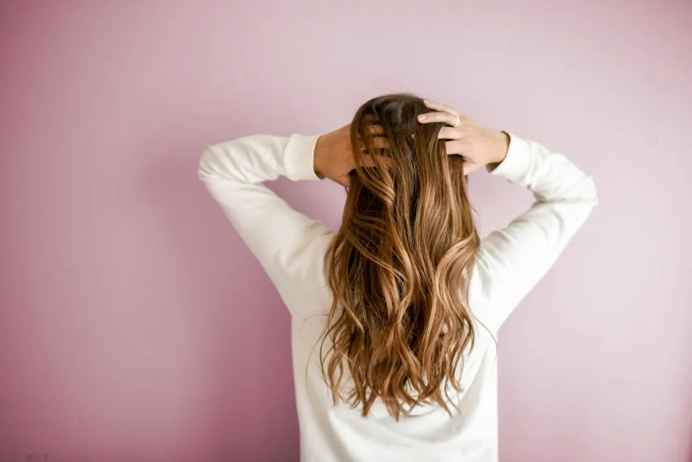
Staal
Soft luxe bronde
Niet zomaar blond. Een zachte mix van blond en bruin, afgewerkt met een toner op maat.
Transformaties
Van vormloos naar volume
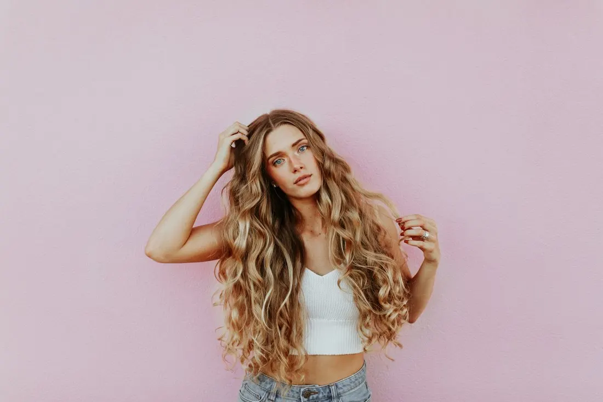

Voorbeeldbeelden: de "voor"-foto is een bewerkte versie van de "na"-foto. Vervang ze door echte voor- en na-foto's van het salon.
Werk
Uit de stoel
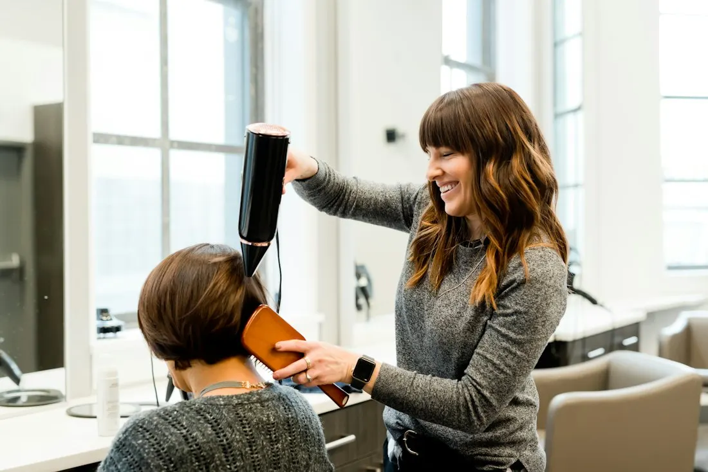
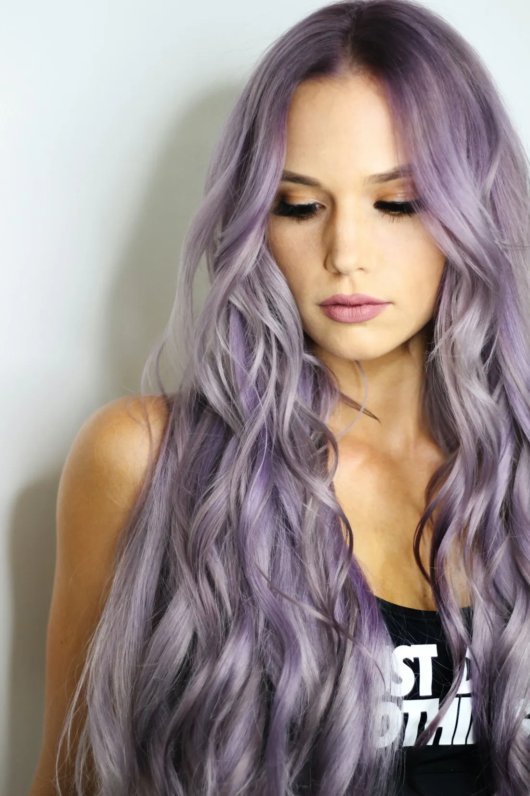
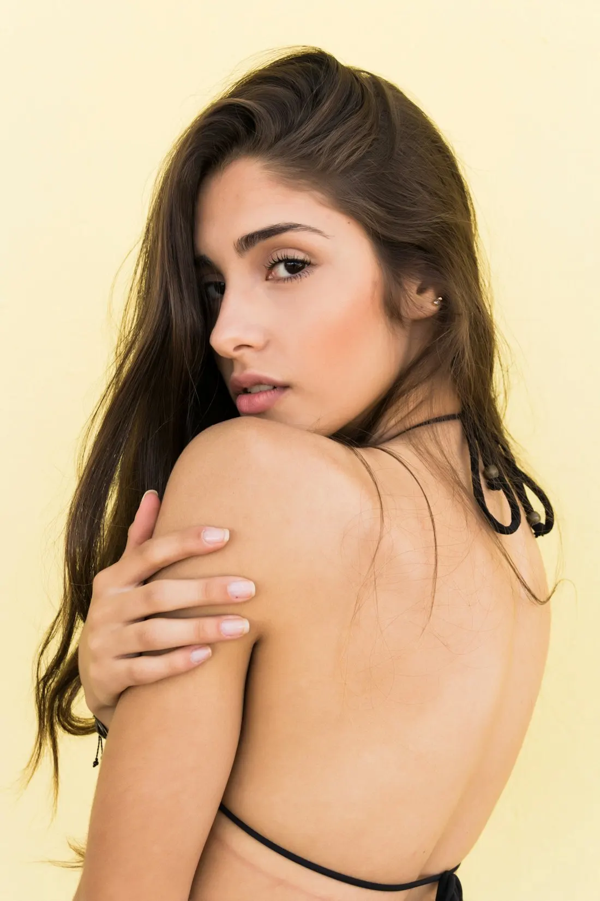
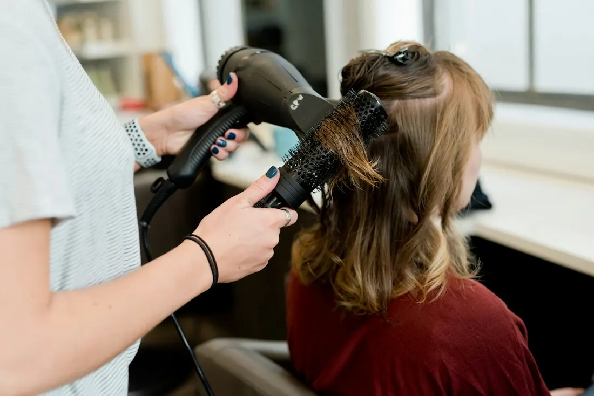
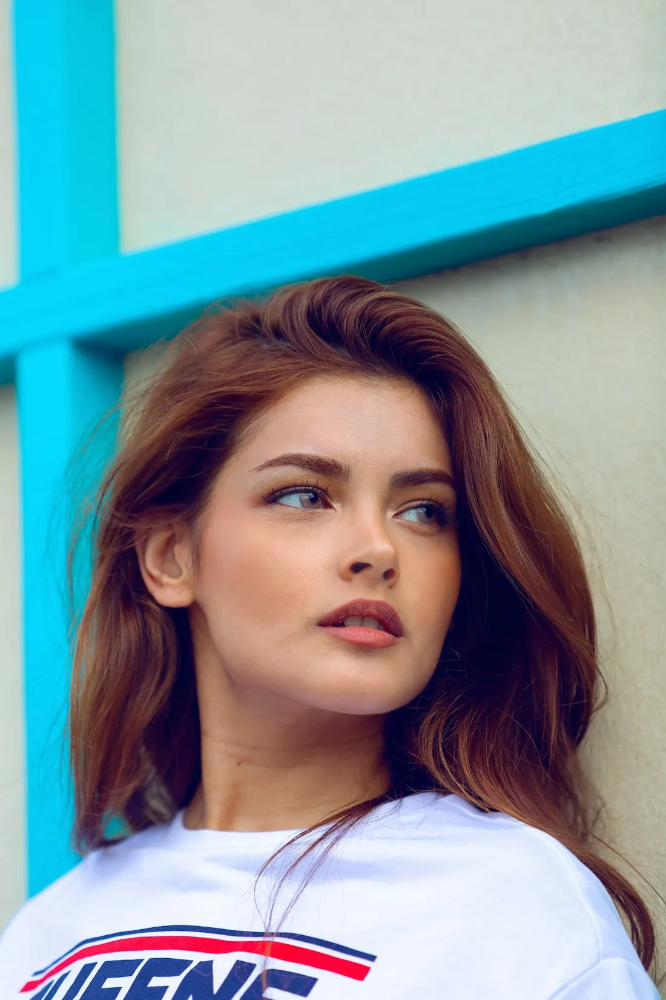

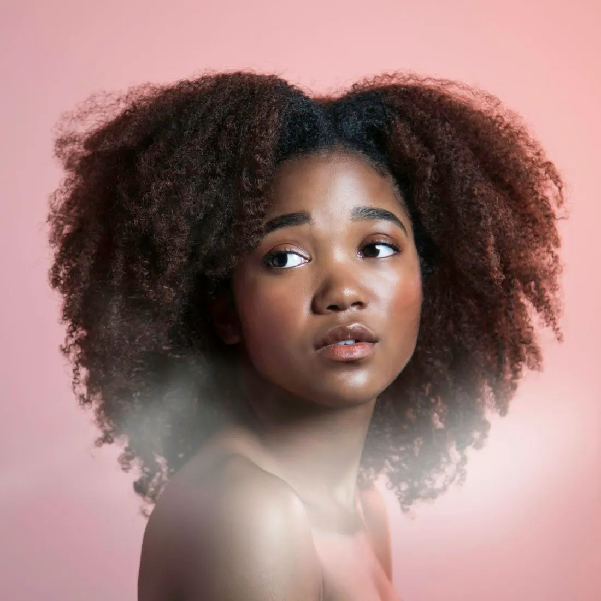
Meer werk op Facebook onder #purehairlovers
Diensten
De kaart
Elke afspraak begint met een kort gesprek over wat je wilt en wat bij je haar past.
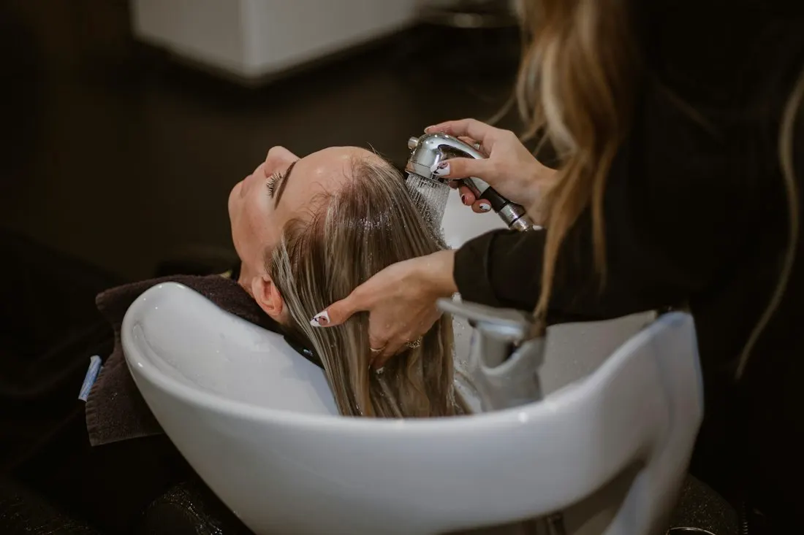
Hoofdhuid
Mooi haar begint bij de basis
Glanzend haar groeit uit een verzorgde hoofdhuid. Geef je kappersbeurt extra meerwaarde met een Glow Up treatment: een verzorging voor de kwaliteit van je haar én je hoofdhuid, telkens met een deugddoende massage.
Je kiest zelf of je met of zonder Glow Up boekt. Twijfel je? Bel gerust, dan denken we mee.
Team
Wie je knipt
Klanten komen al jaren terug, wie van het team ook knipt. Dat zeggen ze zelf in hun reviews.
- Valerie
- Julien
- Betty
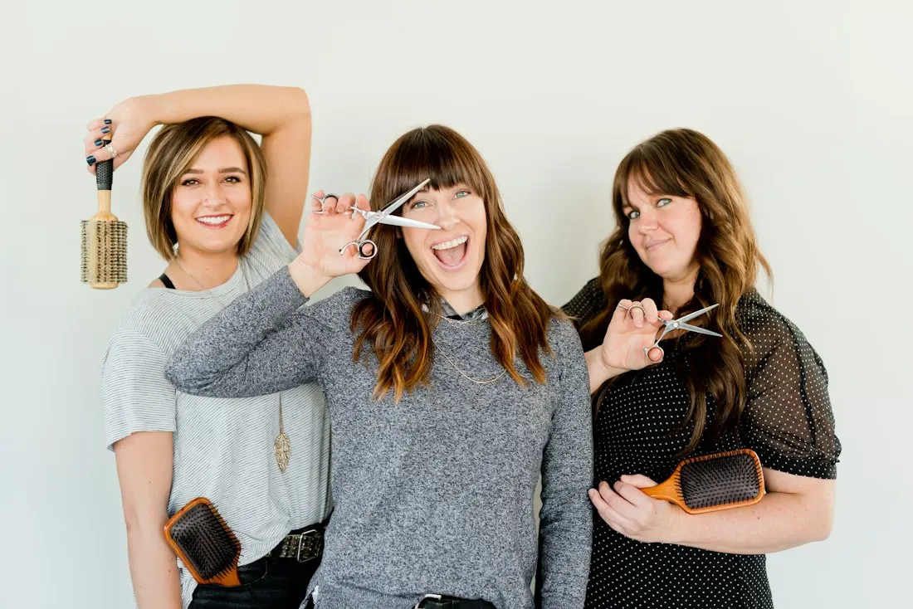
Wat klanten zeggen
Reviews
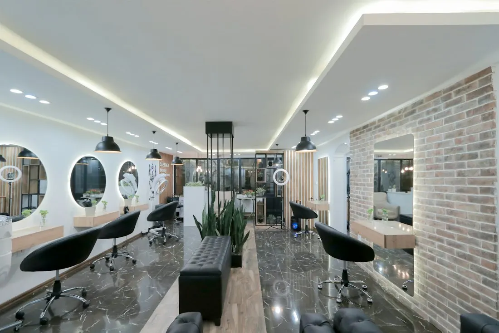
Contact
Waversebaan 47
Heverlee
- Telefoon016 20 05 25
- E-mailpurestyle.v@gmail.com
- RouteOpen in Google Maps
Openingsuren
| Maandag | Gesloten |
|---|---|
| Dinsdag | 10:00 – 18:00 |
| Woensdag | 10:00 – 18:00 |
| Donderdag | 10:00 – 20:00 |
| Vrijdag | 10:00 – 19:00 |
| Zaterdag | 09:00 – 16:00 |
| Zondag | Gesloten |